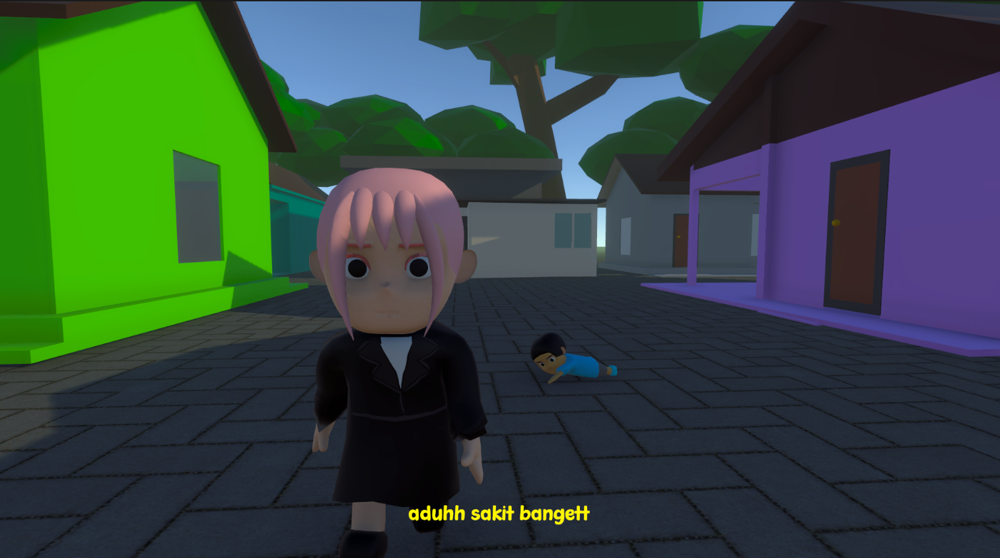
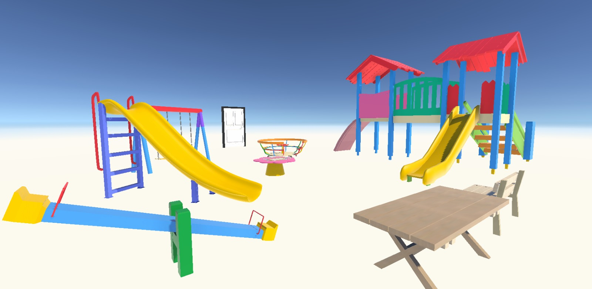
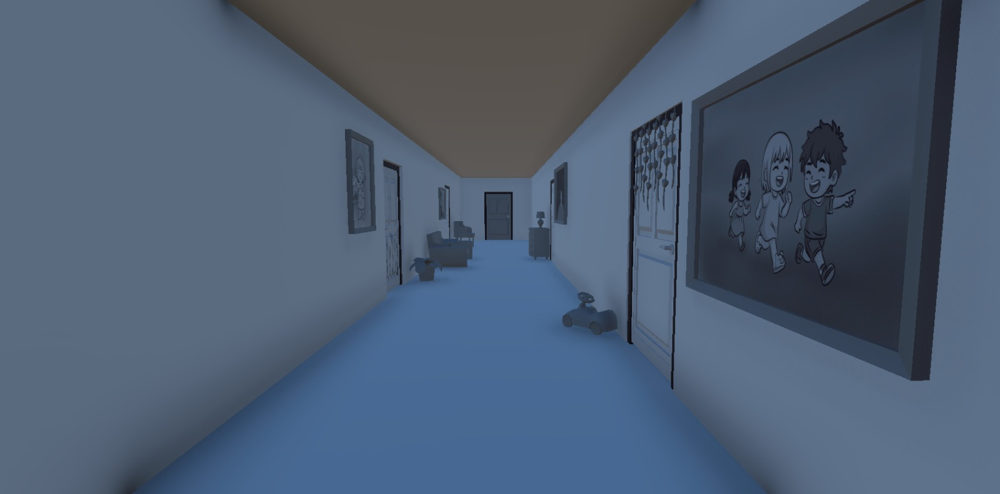

KARYA KAMI
Game yang telah
kami buat.
Before Tomorrow adalah puzzle naratif psikologis berbalut visual 3D chibi yang menampar realita manusia modern. Ini bukan sekadar game teka-teki, melainkan manifestasi visual dari burnout, depresi fungsional, dan hilangnya warna hidup akibat rutinitas yang robotik. Kamu adalah "robot bernyawa" dalam siklus: bangun, kerja, tidur, ulang — sampai akhirnya takdir membawamu tersesat ke sebuah lorong surreal penuh pintu waktu. Setiap pintu adalah ruang isolasi emosimu sendiri: ada taman bermain masa kecil yang kini sunyi, ada labirin jam dinding dari ekspektasi yang mencekik, dan ada cermin retak yang menyuarakan ketakutan terbesarmu. Dengan memanipulasi objek dan menyelesaikan teka-teki lingkungan di tiap ruangan, kamu tidak hanya mencari jalan keluar, tapi juga memungut kembali kepingan jiwamu yang tercecer.

PROYEK YANG DIRILIS
Telah Selesai
Before Tomorrow
Bagaimana jika rutinitas robotikmu membawamu ke ruang isolasi emosi? Before Tomorrow memadukan visual chibi yang menggemaskan dengan narasi burnout yang pekat. Manipulasi objek, selesaikan teka-teki surreal, dan temukan kembali warna hidupmu.
Mainkan di itch.ioPENGEMBANGAN VISUAL
Masuk ke dalam
dunianya.



DESAIN KARAKTER
Kenalan dengan
tokoh utamanya.
Seorang pekerja muda yang jiwanya terkikis oleh depresi fungsional dan rutinitas monoton yang mencekik. Di balik sifatnya yang lelah dan pendiam, tersimpan keberanian tenang untuk menyusuri lorong surreal masa lalunya demi memungut kembali kepingan emosi yang hilang. Desain visualnya mengusung gaya 3D chibi yang mungil dan rentan — tubuhnya yang semula kelabu pucat melambangkan kekosongan hidup, namun perlahan menyala hangat dengan warna-warna kehidupan setiap kali teka-teki kenangan berhasil ia pecahkan.